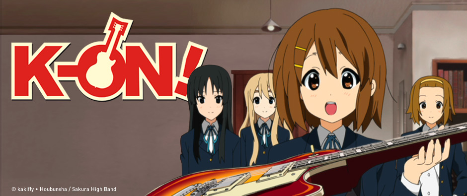
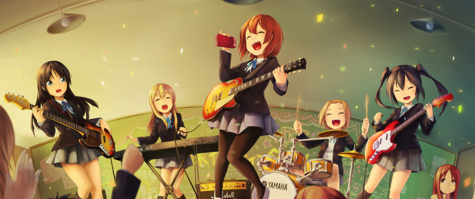
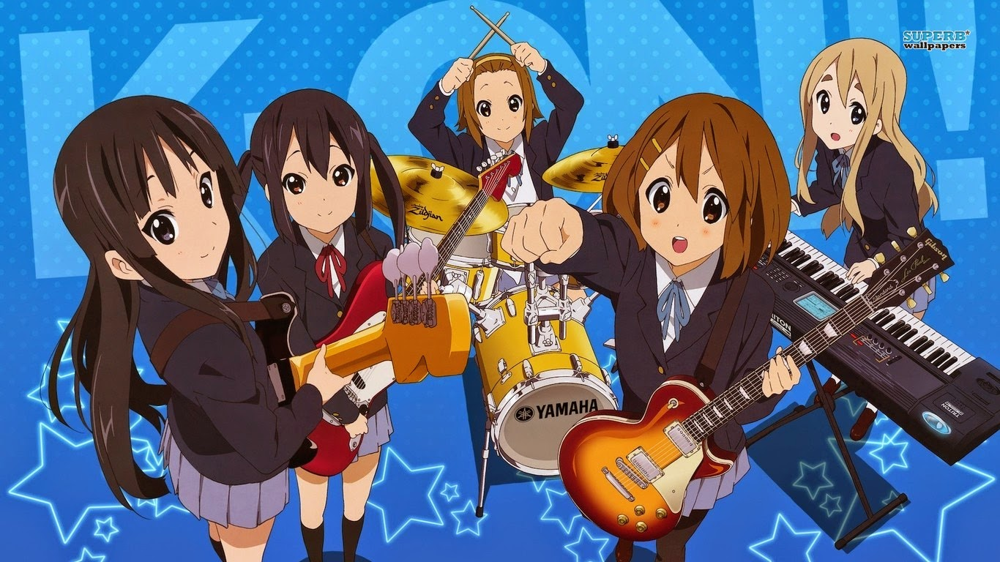
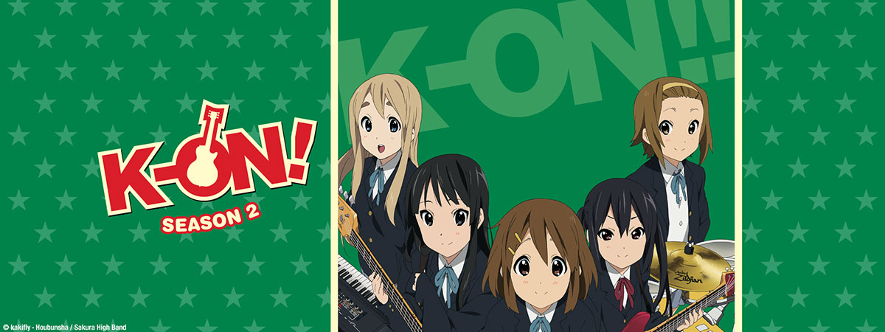

Anime

Sebuah anime adaptasi dengan 13 episode yang disutradarai oleh Naoko Yamada, ditulis oleh Reiko Yoshida, dan diproduksi
oleh Kyoto Animation mengudara antara 3 April dan 26 Juni 2009 pada TBS di Jepang. Anime ini kemudian mengudara pada
sub jaringan termasuk BS-i, MBS, dan Chubu-Nippon Broadcasting. TBS mengudara dalam rasio 4:3, dan seri ini kemudian
mengudara dalam versi widescreen di BS-TBS pada 25 April 2009. Tujuh volume BD/DVD kompilasi dirilis oleh Pony Canyon
antara 29 Juli 2009 dan 20 Januari 2010. Sebuah episode video animasi original (OVA) tambahan dirilis pada volume final
BD/DVD pada 20 Januari 2010. Animax mengudarakan anime ini di Hong Kong dan Taiwan. Baik versi subtitle Inggris dan
dubbing Inggris oleh Red Angel Media mulai mengudara pada 16 Maret 2010 pada Animax Asia. Pada Anime Expo 2010,
distributor anime Bandai Entertainment mengumumkan bahwa mereka memperoleh lisensi K-On! untuk rilis DVD dan Blu-ray
Disc, dengan Bang Zoom! Entertainment memproduksi dub Inggris untuk anime ini.
Sebuah pengumuman tampil pada layar saat konser langsung Let's Go di Yokohama, Jepang pada 30 Desember 2009 bahwa musim
kedua akan diproduksi. Musim kedua, dengan judul K-On!! (dengan dua tanda seru), mengudara dengan 26 episode pada
TBS di Jepang antara 7 April 2010 dan 28 September 2010. Sebuah episode OVA tambahan akan dirilis pada volume
final BD/DVD pada 16 Maret 2011. Musim ini juga mengudara pada Animax Asia mulai 20 Oktober 2010.
Manga

K-On! dimulai sebagai manga strip komik empat panel yang ditulis dan diilustrasikan oleh Kakifly. Manga ini
diserialisasi di majalah manga terbitan Houbunsha Manga Time Kirara antara Mei 2007 - Oktober 2010 yang berakhir pada 9
September 2010. Manga ini diluncurkan kembali sejak April 2011 hingga Juni 2012 di dua majalah berbeda. Cerita yang
diterbitkan di Manga Times Kirara, sejak 8 April 2011 hingga 9 Juni 2012, berfokus pada para karakter utama di
universitas. Cerita yang diterbitkan di Manga Time Kirara Carat, sejak 28 April 2011 hingga 28 Juni 2012, berfokus pada
Azusa, Ui, dan Jun yang melanjutkan klub musik ringan. Volume tankōbon pertamanya dirilis pada 26 April 2008, volume
keempat dan finalnya dirils pada 27 September 2010. Manga ini terlisensi oleh Yen Press untuk rilis Inggris, dengan
volume pertama dirilis di Amerika Utara pada 30 November 2010. Di Indonesia, seri ini terlisensi oleh Elex Media
Komputindo.
Music

Lagu pembuka anime musim pertama adalah "Cagayake! Girls" oleh Aki Toyosaki bersama Yōko Hikasa, Satomi Satō dan Minako
Kotobuki. Lagu penutupnya adalah "Don't Say 'Lazy'" oleh Hikasa dengan Toyosaki, Satō and Kotobuki. Single lagu pembuka
dan penutup dirilis pada 22 April 2009. Sebuah single yang tercantum insert song "Fuwa Fuwa Time" (ふわふわ時間 Light and
Fluffy Time) yang digunakan pada episode enam dirilis pada 20 Mei 2009. Sebuah seri dari Lagu karakter dirilis yang
terdiri dari lagu yang dinyanyikan oleh pengisi suara dari lima karakter utama. Single untuk Yui (oleh Toyosaki) dan Mio
(oleh Hikasa) dirilis pada 17 Juni 2009. Single untuk Ritsu (oleh Satō) dan Tsumugi (oleh Kotobuki) pada awalnya
ditunda, tetapi kemudian dirilis bersama dengan single untuk Azusa (oleh Ayana Taketatsu) pada 26 Agustus 2009. Single
untuk Ui Hirasawa (oleh Madoka Yonezawa) dan Nodoka Manabe (oleh Chika Fujitō) dirilis pada 21 Oktober 2009. OST anime
ini, yang sebagian besar dikomposisikan oleh Hajime Hyakkoku, dirilis pada 3 Juni 2009. Empat lagu yang terdapat dalam
episode delapan dari anime dirilis dalam album mini Ho-kago Tea Time (放課後ティータイム After School Tea Time) pada 22 Juli
2009. Single "Maddy Candy" oleh band Sawako Devil dirilis pada 12 Agustus 2009.

Lagu pembuka dari anime musim kedua adalah "Go! Go! Maniac" dan lagu penutupnya adalah "Listen!!"; dua lagu ini
dinyanyikan oleh Toyosaki, Hikasa, Satō, Kotobuki, dan Taketatsu. Sebuah single yang terkandung dua lagu ini dirilis
pada 28 April 2010. Dari episode 14 dan seterusnya, masing-masing lagu pembuka dan penutupnya adalah "Utauyo!! Miracle"
dan "No, Thank You!", keduanya dinyanyikan oleh Toyosaki, Hikasa, Satō, Kotobuki, dan Taketatsu. Single yang terkandung
dua lagu ini dirilis pada 4 Agustus 2010. Single "Pure Pure Heart" juga dinyanyikan oleh Toyosaki, Hikasa, Satō,
Kotobuki, dan Taketatsu dirilis pada 2 Juni 2010. Single lainnya, "Love", oleh band Sawako Death Devil dirilis pada 23
Juni 2010. Sebuah single yang dinyanyikan oleh, "Gohan wa Okazu/U&I", dirilis pada 8 September 2010. Komposer Bice
yang menulis lagu "Gohan wa Okazu" meninggal pada 26 Juli 2010 karena serangan jantung. Sebuah set lagu karakter
kedua dirilis, dimulai dari single untuk Yui dan Mio pada 21 September 2010. Album pertunjukkan kedua, Ho-kago Tea Time
II, dirilis pada double CD dan limited edition yang mempunyai bonus Kaset pada 27 Oktober 2010. Set single lagu
untuk Ritsu, Tsumugi, dan Azusa dirilis pada 17 November 2010. Single dan album ini dirilis oleh Pony Canyon.
Karakter
Some text in the Modal Body